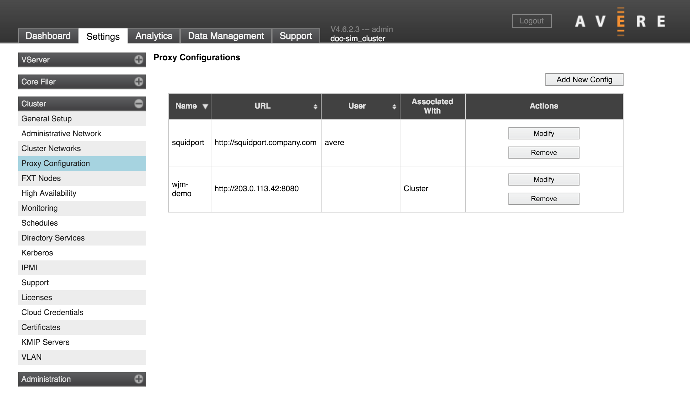
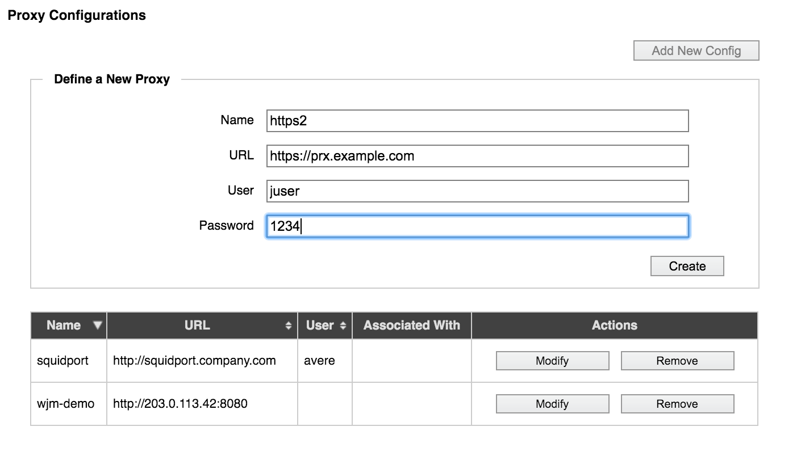
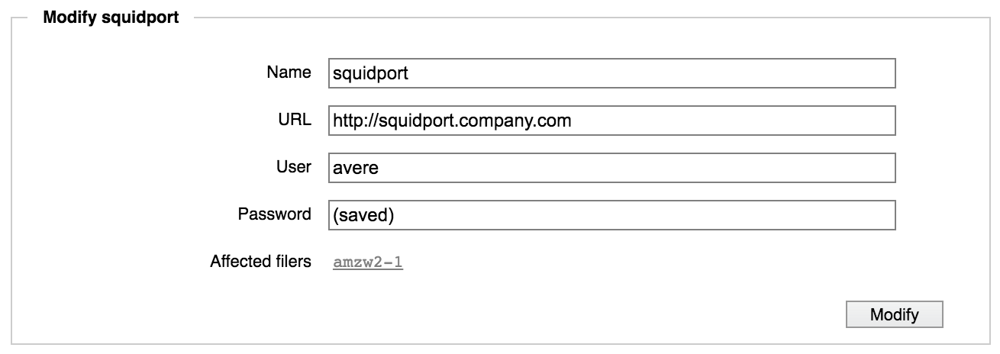

Cluster > Proxy Configuration
Use this page to manage proxy server configurations for the system. (To apply a proxy configuration, use the Cluster > General Setup page or the Core Filer > Core Filer Details page.)
Avere OS supports HTTP/HTTPS proxies; SOCKS proxies are unsupported. The proxy server configurations defined here can be selected for cluster communication or used with cloud core filers.
Important
Only basic authentication is supported. Usernames and passwords are transmitted in plain text. Proxy servers requiring encrypted transmissions are not supported.
The table lists existing proxy configurations, with buttons in the Actions column to remove or modify each one. The Associated With column shows if the proxy is being used on the cluster or on a core filer.
Before adding a proxy configuration for your Avere cluster, you should install and configure the proxy server that you want to use. Read Using Web Proxies with Avere OS to learn more.
Creating a Proxy Configuration
To add a new proxy configuration, click the Add New Config button.
{kind=link}
Enter a name for the proxy configuration in Name.
In the URL field, enter the full URL, including protocol. Including a port number is optional.
If the system will log in when connecting to the proxy server, enter the username and (if required) the password.
When finished, click Create to save the proxy configuration.
Modifying a Proxy Configuration
To edit a proxy configuration already in the system, click the Modify button in its Actions column in the table.
If the configuration is being used by any core filers, those filers are listed at the bottom of the modify dialog.
{kind=link}
Using Proxy Configurations
Proxy configurations can be applied to individual cloud core filers, or to the cluster.
Note
Proxy configurations are used with cloud core filers only; NAS core filers do not use proxy configurations.
Cluster Proxy
To set a proxy configuration for the cluster:
- Navigate to the Cluster > General Setup settings page.
- Use the drop-down list labeled Web Proxy (optional) to choose a proxy configuration.
- Click the Submit button.
{kind=link}
Core Filer Proxy (cloud storage only)
To set a proxy configuration for a cloud core filer:
- In the Core Filer section of the Settings pages, select a cloud core filer and open its Core Filer Details page.
- The Edit Filer panel has a Proxy setting. Choose one of the configurations from the list.
- Click the Submit button in the Edit Filer area to save the change.